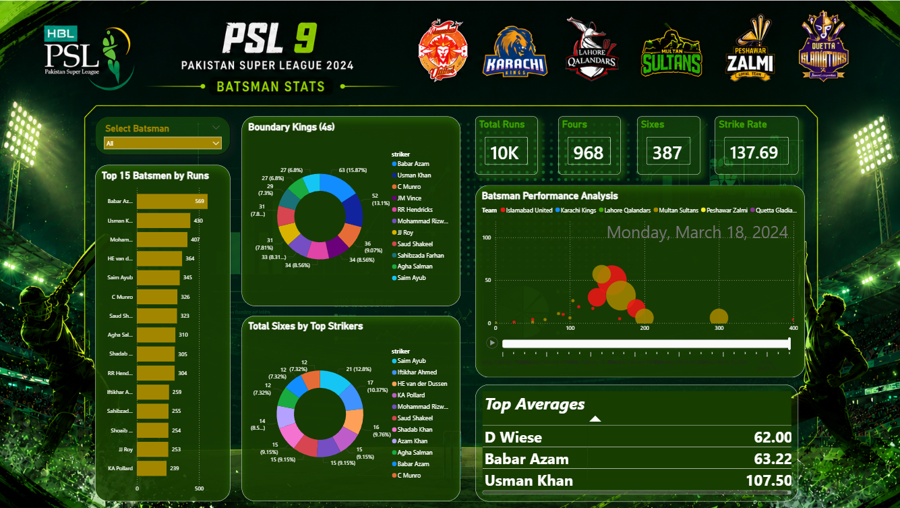
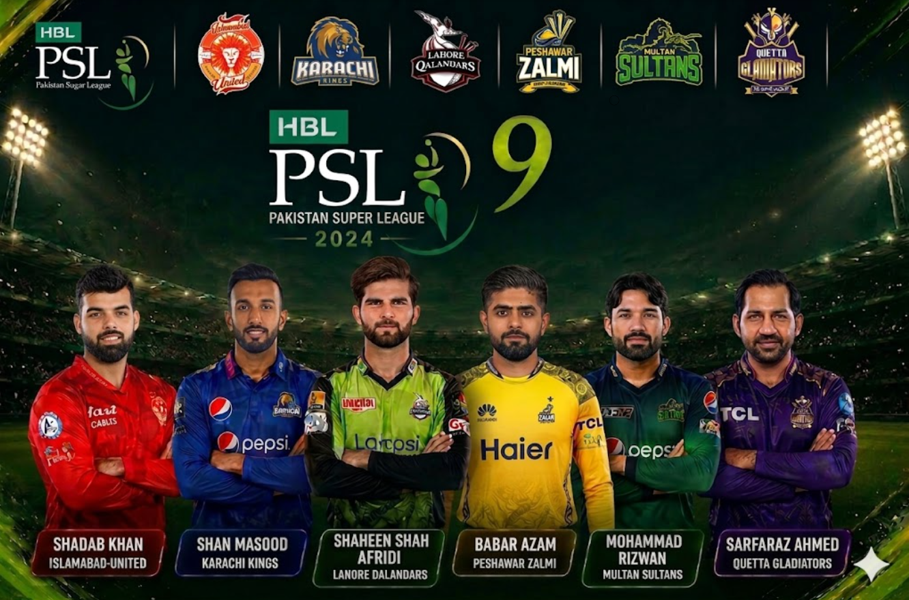
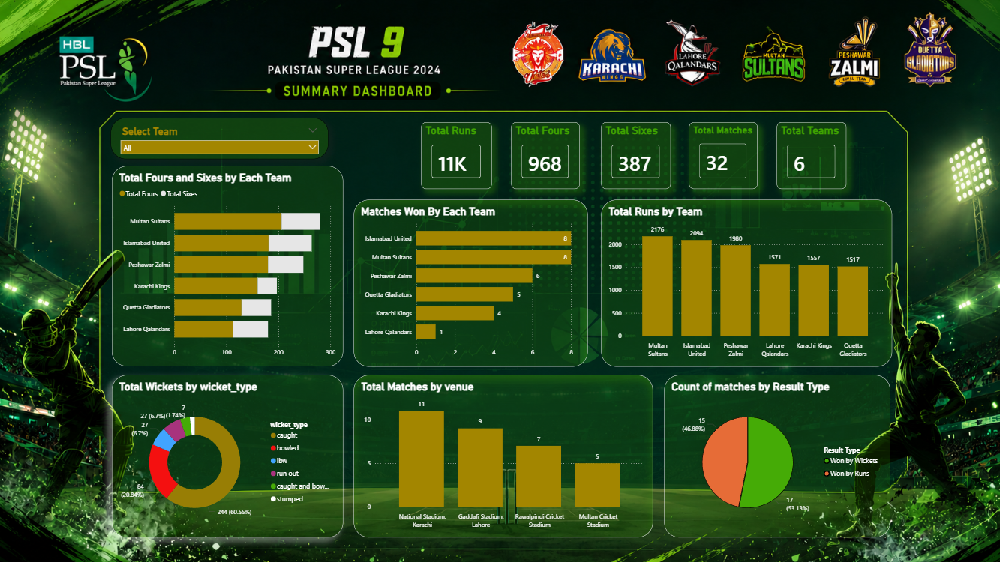
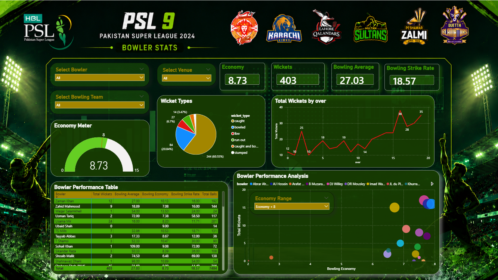

Summary Dashboard
Gives an overall view of tournament KPIs, team performance, match results, and venue-based analysis.
An interactive Power BI dashboard built to analyze PSL 9 batting, bowling, team performance, and tournament insights through clean, professional, and data-driven visuals.
Dashboard Pages
Main Tool
Measures Used

Season Analyzed
Player Insights
Performance Analysis
Tournament Comparison
This project transforms PSL 9 cricket data into an interactive Business Intelligence solution. It demonstrates dashboard design, DAX, Power Query, data modeling, and storytelling with data.
Explore team and player performance using dynamic visuals and filters.
Showcases Power BI, DAX, Power Query, KPI design, and report building.
Turns raw match data into simple, meaningful, and visually appealing insights.
Each page focuses on a different part of PSL 9 analytics, making the report easy to understand and easy to explore.

Gives an overall view of tournament KPIs, team performance, match results, and venue-based analysis.

Highlights top run scorers, strike rate, boundaries, batting averages, and player-wise comparison.

Analyzes wickets, bowling economy, strike rate, wicket types, and overall bowler effectiveness.
Users can filter by team, player, and other report elements for quick insights.
The dashboard uses key metrics to communicate performance clearly.
Clean visuals help users understand cricket data quickly and easily.
This project applies BI concepts to real-world sports performance analysis.
You can download the Power BI file, view the dataset, or visit the full GitHub repository.